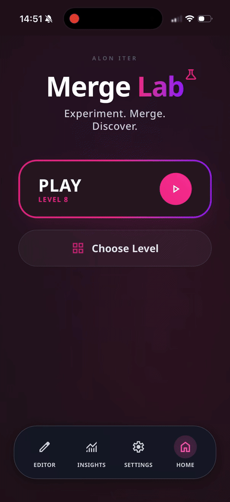
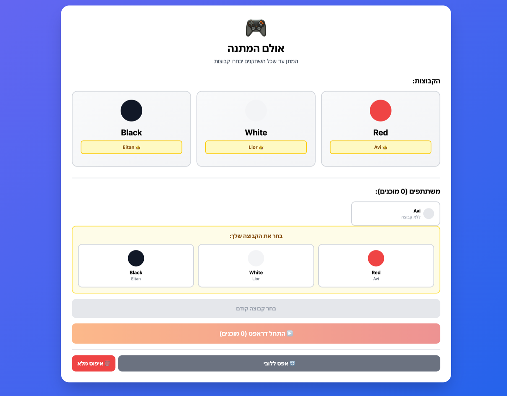
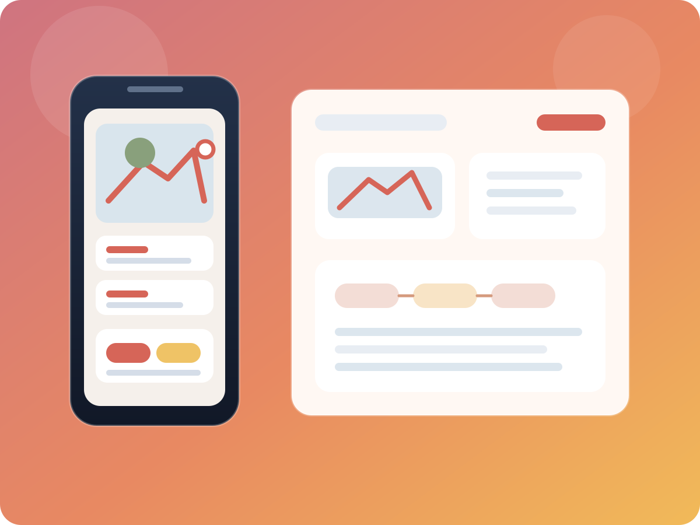
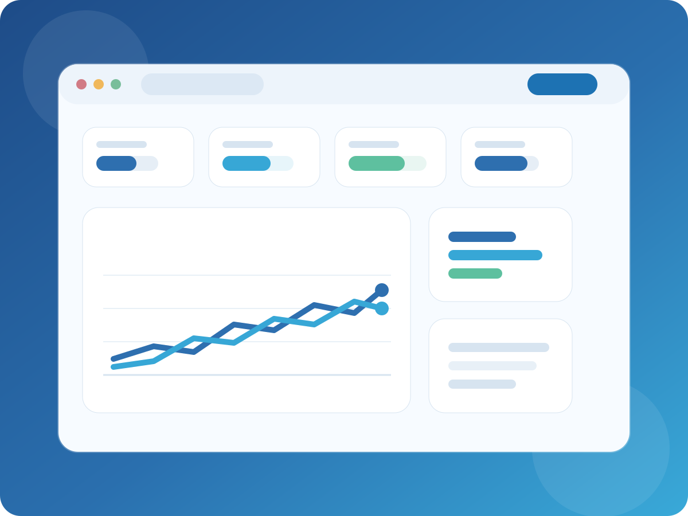

01
Shape the opportunity
Define the player problem, success criteria, and scope boundaries before production starts.
Technical Operations Manager • Mobile Gaming • Product Systems
Technical Operations Manager in live mobile gaming with hands-on experience turning feature ideas into clear systems, QA-ready workflows, and measurable iteration loops.
I usually move game features through four practical stages so scope, delivery, and follow-up stay aligned from the first brief to post-launch review.
01
Define the player problem, success criteria, and scope boundaries before production starts.
02
Turn the idea into clear rules, edge cases, content needs, and QA-ready handoff notes.
03
Keep Product, Monetization, QA, and R&D aligned on priorities, blockers, and release risks.
04
Use KPI follow-up, prototype feedback, and live results to sharpen the next version quickly.
Selected work across live mobile gaming, feature definition, balancing tools, gameplay prototypes, and product systems.
Retention Event Concept • Casual F2P
Designed a weekly risk-reward event with reward logic, KPI planning, and tuning hooks to test a stronger mid-week engagement loop.

Puzzle Prototype • Level Editor & Insights
Built a merge prototype with a live editor and insight view to shorten balancing loops and make tuning decisions faster and clearer.
Progression & Tuning Prototype • Browser Game
Built a rhythm runner prototype to test gameplay flow, stage progression, economy decisions, and early difficulty tuning through quick iteration.

Sports PWA • Snake Draft System
Built a host-led drafting app that imports players from WhatsApp, assigns captains, and creates three fair football teams through a structured snake draft flow.

Workflow Product • iOS MVP Delivery
Shipped an inspection reporting app used by a real company, replacing a manual reporting flow with a faster capture-to-export workflow.

Analytics Product • KPI Visibility
Built an internal KPI dashboard to centralize fragmented product data, align metric definitions, and make performance changes easier to spot.
Mixed Reality Prototype • Interaction Testing
Built a Unity mixed-reality prototype to test interaction concepts quickly and explore practical technical design in a short development cycle.
Additional prototypes, tooling experiments, and product workflow case studies across gaming and systems work.
I turn moving priorities into concrete deliverables, validation logic, and handoff materials that are easier for teams to execute.
I add structure around QA checks, launch communication, and edge-case awareness so releases are easier to trust.
I work comfortably across Product, Monetization, QA, and R&D, keeping scope, blockers, and next steps explicit.
I use KPI follow-up, playtest feedback, and workflow improvements to make the next version sharper than the last.
I’m strongest in roles that connect feature definition, execution, QA readiness, and KPI follow-up in mobile games.
Mobile Gaming • Product Systems • Delivery • LiveOps